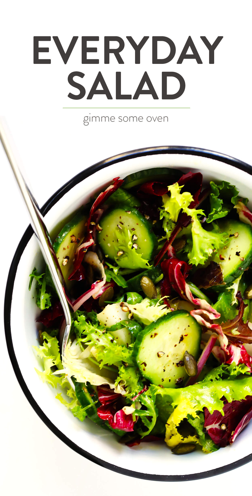

Salad 
An everyday salad!
My favorite “everyday” salad recipe is quick and easy to make, tossed with a simple and delicious lemony dressing, and so versatile that it goes with just about everything!
Ingredients
- 5 ounces spring greens mix (or any salad greens you prefer)
- half of an English cucumber, very thinly sliced
- half of a medium red onion, peeled and very thinly sliced
- 1/2 cup pepitas or toasted pine nuts (or any other nuts or seeds you prefer)
- 1 tablespoon freshly-squeezed lemon juice (or red wine vinegar)
- 1 teaspoon Dijon mustard
- 1 small clove garlic, pressed or finely-minced (or 1/2 teaspoon garlic powder)
- 3 tablespoons olive oil
Steps
- To Make The Dressing: Whisk all ingredients together in a bowl (or shake together in a mason jar) until combined.
- To Make The Salad: Combine all ingredients in a large salad bowl and toss with the dressing until evenly combined. Serve immediately and enjoy!